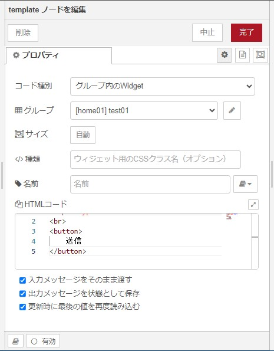
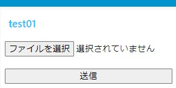
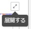
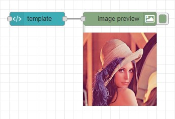

node-red-dashboard（ダッシュボードノード）は、 Angular／Angular Materials／JQueryを使用したWEB UIです。
ダッシュボードノードの一つであるtemplateノードで、オリジナルなノードを作成することができます。

これを使って、
「スマホのカメラアプリの起動 ⇒ 撮像 ⇒ 画像の取得 ⇒ 次のノードに画像を送信」
を実行するノードを作成してみます。
GUIはこんな感じ。

templateノード内に以下のような感じで記述しました。
<input type="file">
<br>
<input type="button" value="送信">HTMLコードの右上のを押すことで、HTMLコードを編集しやすくなります。
「スマホのカメラの起動」～「撮像」
<input type="file" capture="environment" accept="image/*">HTML5の機能を利用することでカメラを起動することが可能です。
非常に簡単です。以下に詳細な説明のあるページを上げておきます。
- input（入力欄要素）について
- カメラを使用する時のtype属性の"file"について
- 画像ファイルを利用するためのaccept属性について
- 前面カメラと背面カメラの切り替えるためのcapture属性について
スマホのカメラが利用できる場合に、[ファイルを選択]ボタンを押すことでカメラアプリが起動します。
利用できない場合にはファイルオープンダイアログが起動します。
カメラアプリが起動し撮像し保存しても、このままでは次のノードに画像を送信することはできません。
「画像の取得」
次のノードに画像を送信するには、まず、input要素でのchangeイベントを受け取り、データを取得する必要があります。これは、JavaScriptを利用します。
<input type="file" capture="environment" accept="image/*" id="ID001">input要素にidグローバル属性を付与することで、JavaScriptで扱えます。JavaScriptのコードを追加します。<script>タグ内。
<input type="file" capture="environment" placeholder="画像の選択" accept="image/*" id="ID001">
<br>
<input type="button" value="送信" id="ID002">
<script>
var value = "";
var content = document.querySelector("#ID001");
content.onchange = function (event) {
var files = event.target.files, file;
if (files && files.length > 0) {
value = files[0];
}
};
</script>var content = document.querySelector("#ID001"); でinput要素を扱えるようになります。
content.onchange = content.onchange = function (event) {} でchangeイベントを取得することができます。
eventのインスタンスプロパティのEvent.targetで「イベントが最初に送出されたターゲットへの参照」を取得できます。
Event.target.filesについての説明については、「ウェブアプリケーションからのファイルの使用」にあります。
「次のノードに画像を送信」
最後に、次のノードにvalueを送ります。
これには、ダッシュボードのtemplateについて その1のやり方を使います。
<input type="file" capture="environment" placeholder="画像の選択" accept="image/*" id="ID001">
<br>
<input type="button" value="送信" id="ID002">
<script>
var nodeScope = scope;
var value = "";
var content = document.querySelector("#ID001");
var btnSend = document.querySelector("#ID002");
content.onchange = function (event) {
var files = event.target.files, file;
if (files && files.length > 0) {
value = files[0];
}
};
btnSend.onclick = function (event) {
nodeScope.send({payload: value});
};
</script>これで、次のノードに画像を渡せます。valueには画像のバイナリーが入っているのですね。
確認するには、node-red-contrib-image-outputをつなげます。
